Sunpetal Valley visual review
Two matched gameplay cameras show the Homebase and Moonlace Reef overhaul. The playable build also includes the four rigged outfits, two harvestable crops, cooking, and landmark discoveries. Open Life in the game to try them.
Sunpetal Homebase

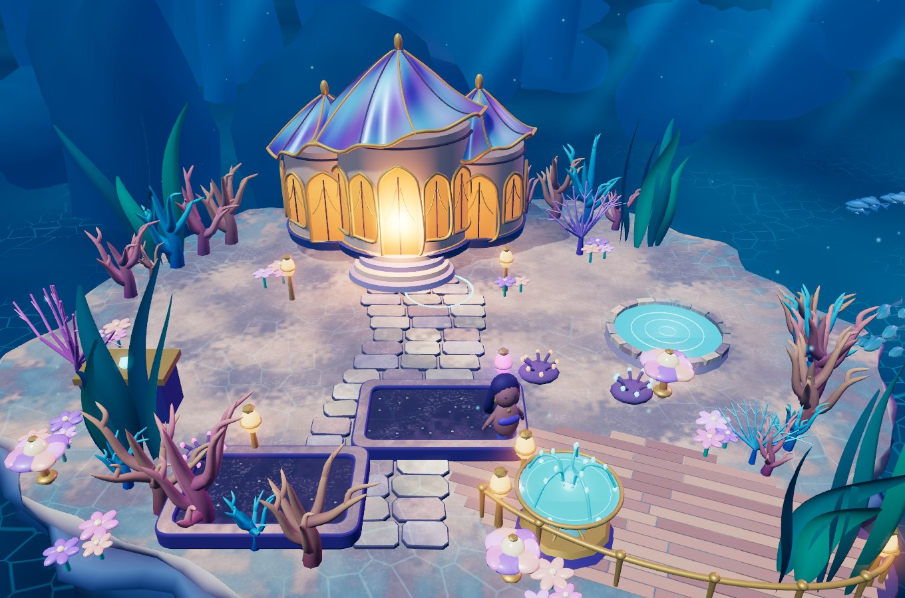

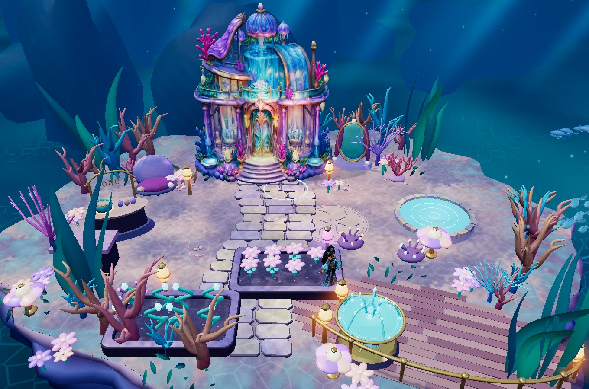

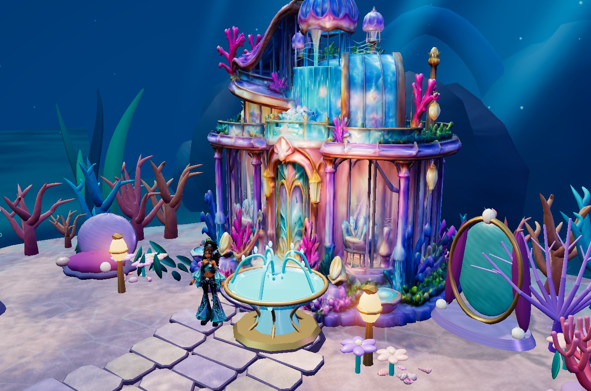

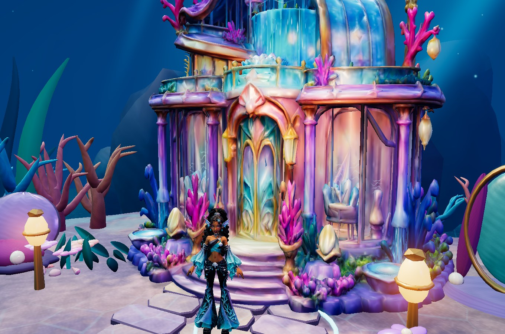
The supplied cottage fits behind the original steps fountain pad. The open central courtyard now has an inset stone design. The pearl mirror, kitchen, crafting and storage, and creature nook sit on the edges. The tray gardens show the farm’s growth stages.
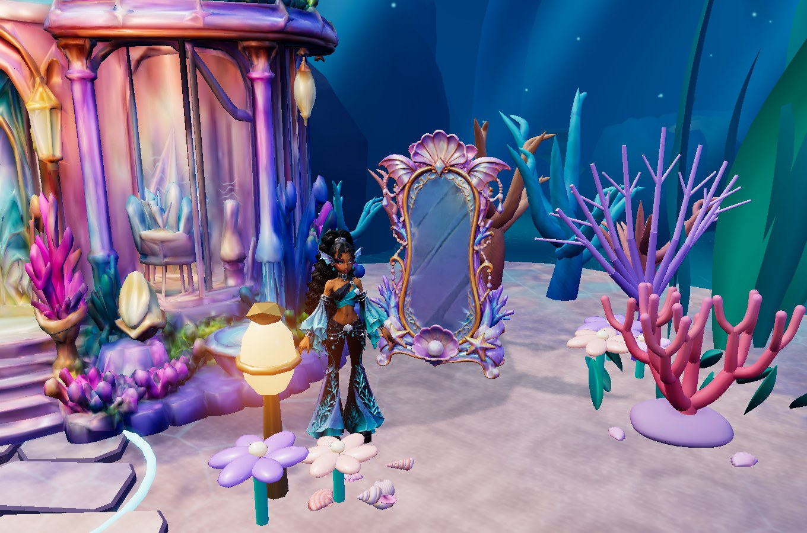

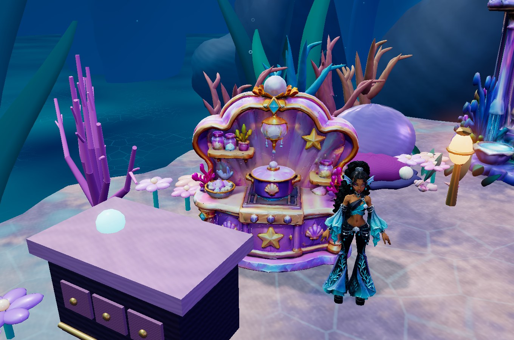

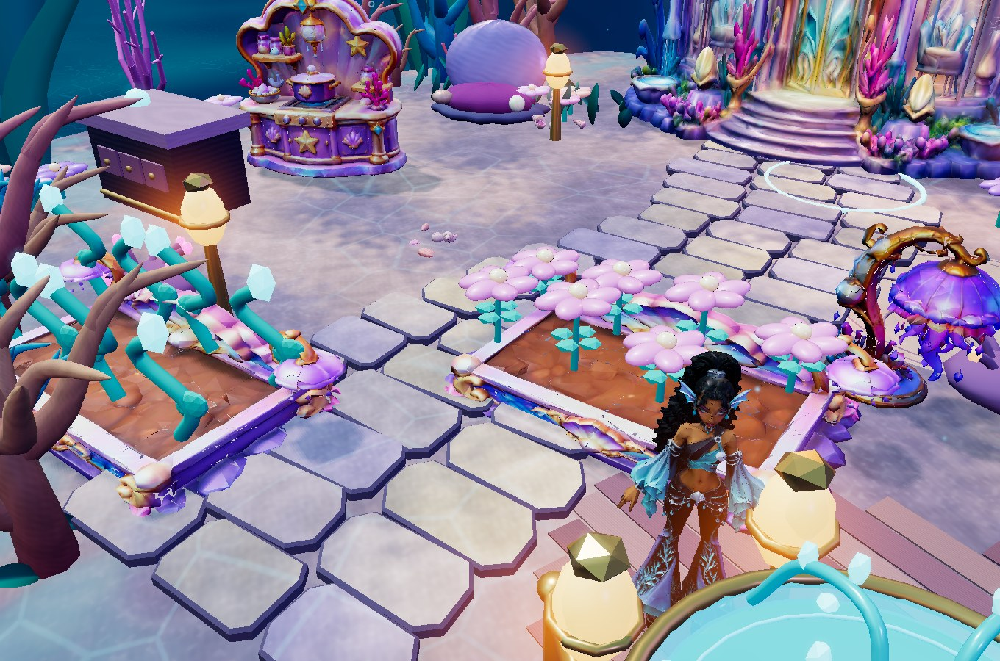
Moonlace Reef

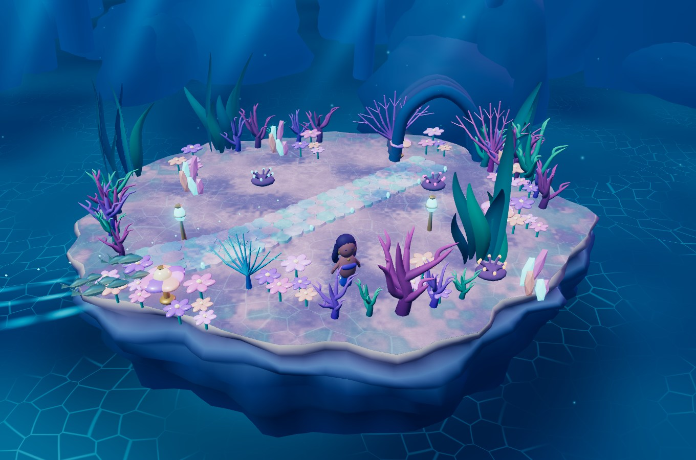

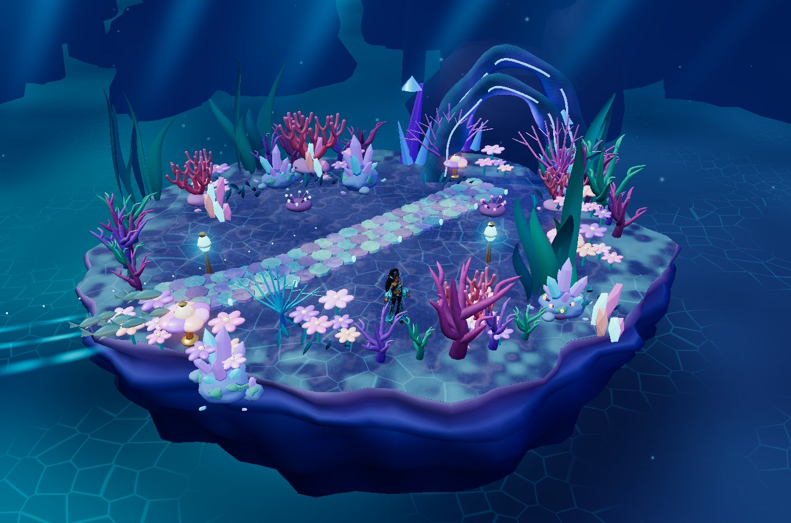
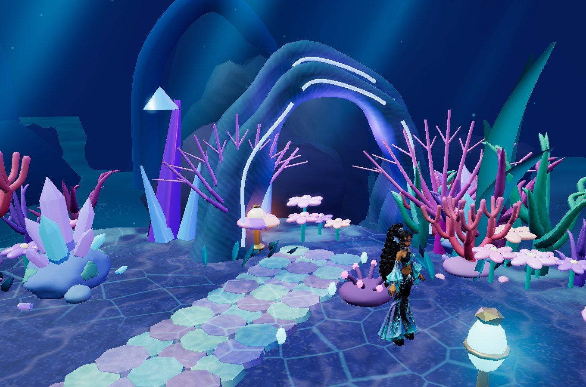
Slate-blue ground and violet distance haze give Moonlace its own palette. Opal paving leads from the shelf to the grotto. Accent lights pick out the rock seams and crystal beds.
Visual scorecard
Scores reflect inspection of the matched desktop frames, close-ups, and the low-graphics portrait views.
| Category | Homebase | Moonlace |
|---|---|---|
| Materials and textures | 21 / 25 | 19 / 25 |
| Lighting and rendering | 17 / 20 | 17 / 20 |
| Environment detail and composition | 15 / 20 | 16 / 20 |
| Location fidelity and polish | 17 / 20 | 16 / 20 |
| Motion, mobile readability, and performance | 11 / 15 | 11 / 15 |
| Total | 81 / 100 | 79 / 100 |
Both areas clear the 65-point review gate. The cottage façade leads Homebase’s visual quality, while station silhouettes and close-range foliage still vary in finish. Moonlace has stronger depth and contrast now. Its smaller coral clusters and the back of Glassfin still need more distinctive shapes to approach the 85-point target. The creature nook is staged scenery. Physical iPhone Safari and hardware frame rate remain unverified.
Playtest evidence
- Desktop Chromium WebGL2. Keyboard movement, the Luma introduction, outbound and return travel, and the reef seed interaction passed. All four outfits equipped in the playable scene. Both crops went from sowing through harvest, and cooking consumed the expected ingredients and applied the on-screen speed boost. The pantry and discoveries persisted across reloads.
- Mobile-sized Chromium with touch emulation. Canvas taps moved the avatar. Fountain placement and relocation reached the original Cottage steps and Garden overlook coordinates. Travel, the Wardrobe, and the Low graphics toggle worked at 390 × 844.
- Automated regressions. All seven gameplay checks passed, including the complete 13-step story. All eight scene checks passed, including both fountain transforms and camera picking. All four environment imports resolved in the WebGL captures. No critical browser errors were observed.
- Water motion. Frames inside the fitted cottage’s four-second animation loop showed visible movement, and the opening and closing frames matched. The visual evidence uses browser fixtures because the Game Development Studio CLI and the managed Sites preview relay were unavailable.
- Scale. Each outfit uses the same 1.12-unit eye height before hover. Full rest bounds are 1.27–1.35 units, including accessories. The gently hovering models were compared against the cottage entrance, steps, kitchen counter, mirror, and fountain. The porch opening measures approximately 1.67 units, with the horizontal foundation footprint preserved.

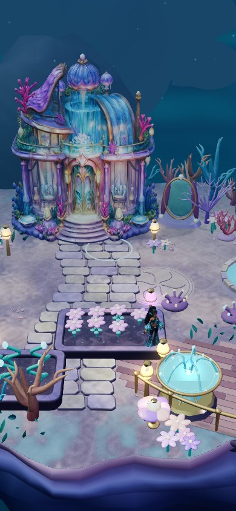

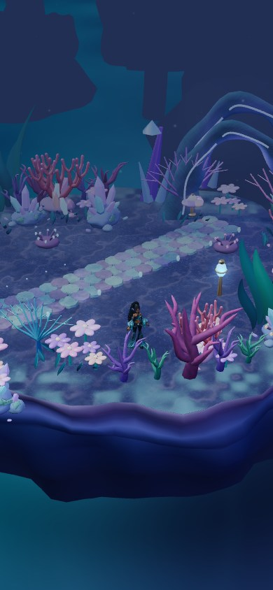

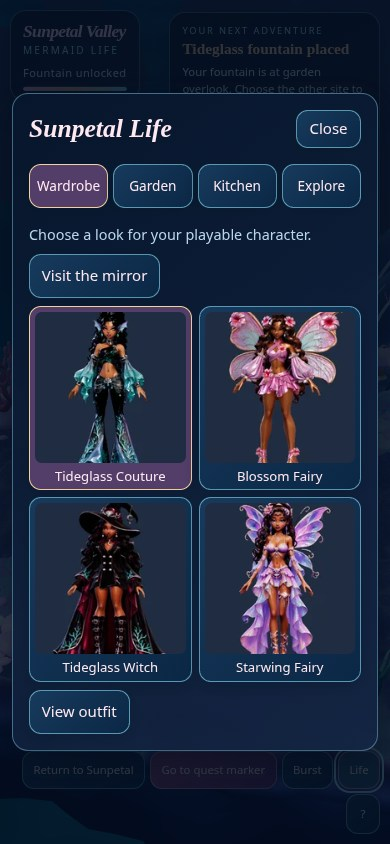

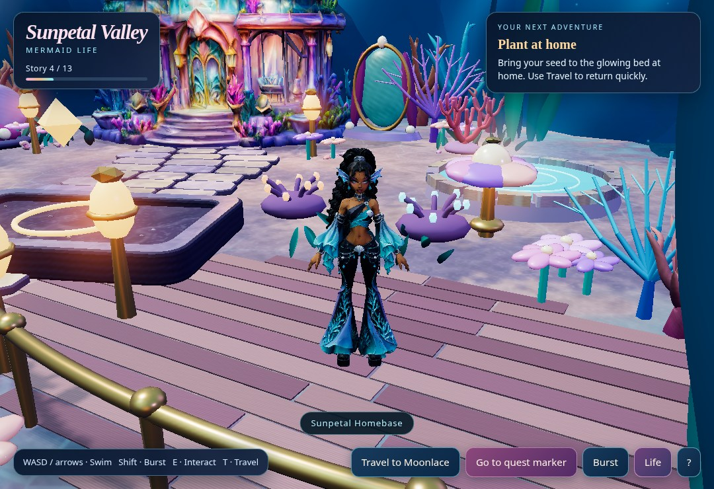

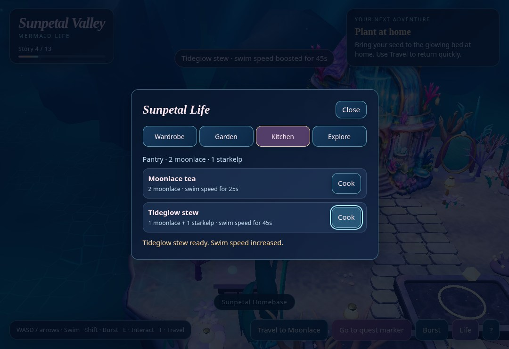
Browser test logStory regression resultsScene regression resultsCamera and placement measurements
Assets in the playable build
| Asset | Origin and rights | Use |
|---|---|---|
| Animated waterfall cottage | Supplied Sunpetal artwork | Animated cottage, locally optimized and fitted to the game |
| Pearl wardrobe mirror | Supplied Sunpetal artwork | Full-length mirror and in-world Wardrobe interaction |
| Jewel shell kitchen, shell planters, jellyfish lantern | User-created Sunpetal artwork from the Mermaid Life build | Existing kitchen, garden plots, and crafted lantern reward |
| Four rigged character GLBs | Supplied Sunpetal artwork and existing project rigs | Playable Wardrobe outfits and close-up camera |
| Seashell | CC0 1.0 · Grab3D source · License | Clustered courtyard accents |
| Coral Branch | CC0 1.0 · Grab3D source · License | Selected rock and shoreline clusters |
| Crystal Cluster | CC0 1.0 · Grab3D source · License | Moonlace crystal beds |
The three CC0 meshes use 512-pixel embedded PBR maps. The waterfall cottage keeps its four-second animation and 114 tracks. Paths, stations, arches, seabed, and lighting are authored or generated within the existing project.
Changed project files
dist/index.html
dist/reef3d.js
dist/reef-layout.js
dist/reef-scene.js
dist/reef-renderer.js
dist/reef-life.js
dist/reef-surfaces.js
dist/reef-landmarks.js
dist/reef-model-loader.js
dist/reef-avatar.js
dist/reef-activities.js
dist/environment/{waterfall-cottage,pearl-wardrobe,coral,crystals,shell,jewel-kitchen,shell-planter,jelly-lantern}.glb
dist/visual-review.html
dist/art-review/ — comparisons, captures, results, and asset manifest